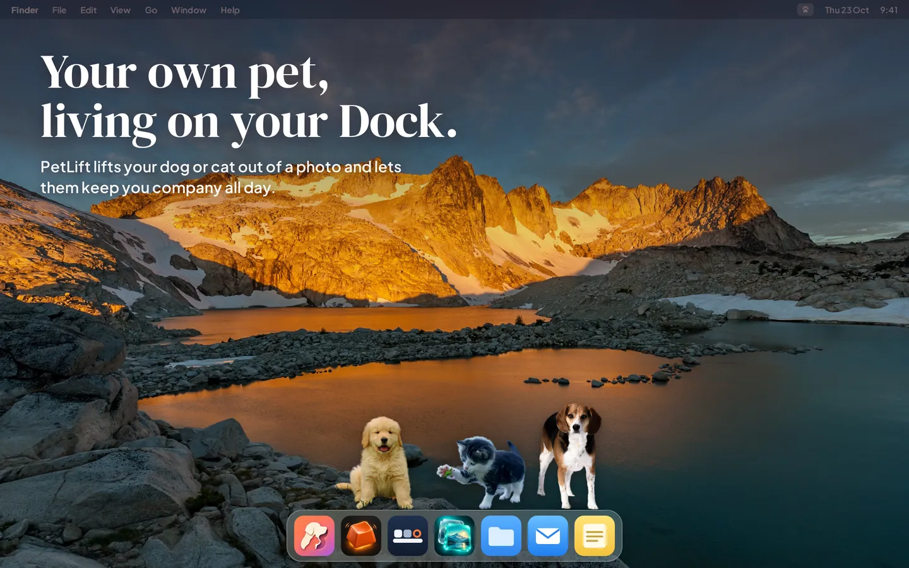
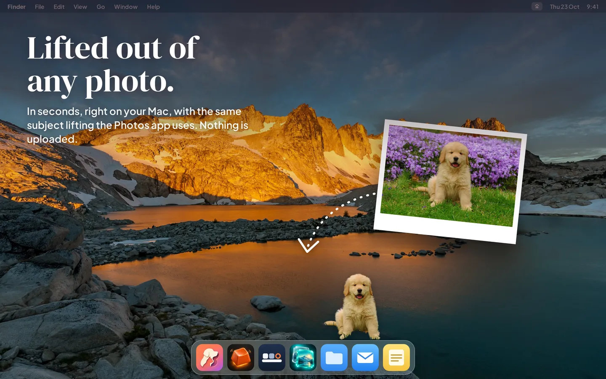

Halloware Mac apps / Guides
A desktop pet for your Mac, made from your own pet
Desktop pets are little characters that live on your screen while you work. Here is what is out there for the Mac, and how to put your own dog or cat on your Dock instead of a cartoon.

What is a desktop pet?
A desktop pet is a small animated character that walks around your screen, sits on your windows and reacts when you click it. The idea goes back to the early days of Windows, with pets like eSheep, and became popular again with Shimeji, a free program where anime characters climb across the screen.
They do nothing useful, and that is the point: a bit of company on a long day at the computer.
Desktop pets on the Mac today
Shimeji-style pets
Shimeji was made for Windows and runs on Java. Unofficial Mac versions exist, but they are not on the Mac App Store, need Java installed, and you have to allow an app from an unknown developer.
Cartoon pets from the Mac App Store
Search the Mac App Store for "desktop pet" and you will find several apps with drawn or pixel-art cats and dogs, some living on the Dock, some in the notch. They are easy to install and safe, but every user gets the same few characters.
Your own pet, with PetLift
We made PetLift because none of those were our pet. You give it a photo of your dog or cat, it cuts your pet out of the picture on your Mac, and your pet drops onto your Dock.
How to put your own pet on your Dock

- Pick a photo where your pet stands out from the background, with the whole pet in view.
- Open PetLift and drop the photo in, choose it from a folder, or pick it from Photos.
- Watch your pet lift off the photo, give them a name, and choose Put on My Dock. They fall from the top of the screen and land on your Dock.
- Add more pets from the paw icon in the menu bar. You can make each one bigger or smaller and flip the way they face.
What your pet does
- Free: one pet, curled up asleep on your Dock, breathing slowly.
- PetLift Pro wakes them up: they hop along the Dock, come over to your pointer, jump with a heart when you click them, and nap when you step away from your Mac. You can add as many pets as you like.
Common questions
Will a desktop pet slow down my Mac?
PetLift draws your pets in step with the display and slows down when nobody is moving: a sleeping or sitting pet updates 30 times a second instead of 60 or 120. It does not need a fast Mac.
Does it get in the way of my work?
Clicks go straight through the empty space around your pet, so it never blocks what you are doing. You can keep pets behind your windows, or hide them all with one switch.
Is it private?
Yes. The cut-out is made on your Mac and stored on your Mac. PetLift has no account and no tracking.
Is there a version for iPhone?
Yes. PetLift for iPhone puts your pet in the Dynamic Island, on the Lock Screen and in a Home Screen widget.